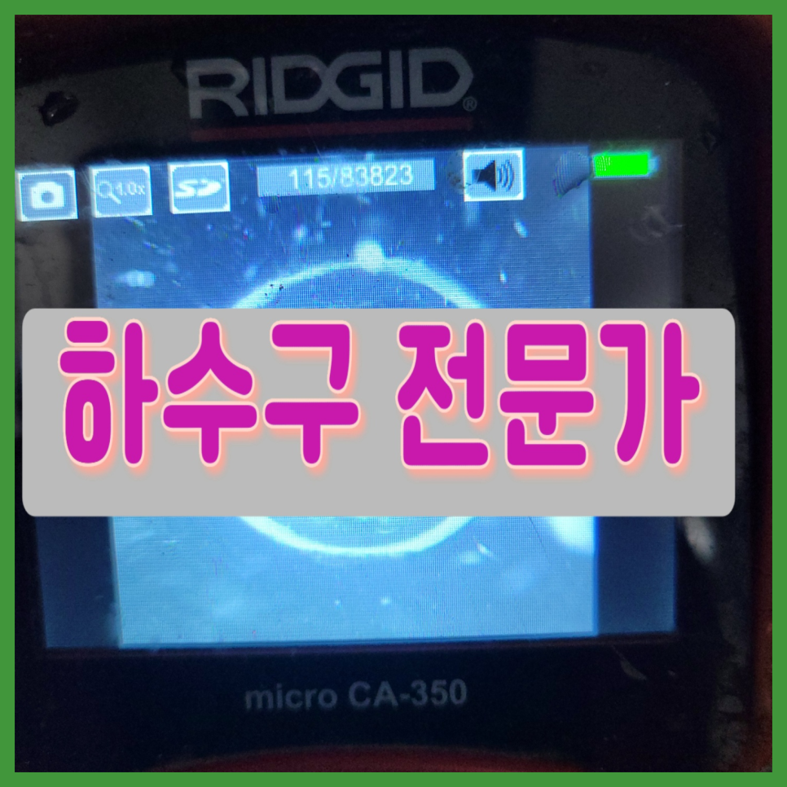
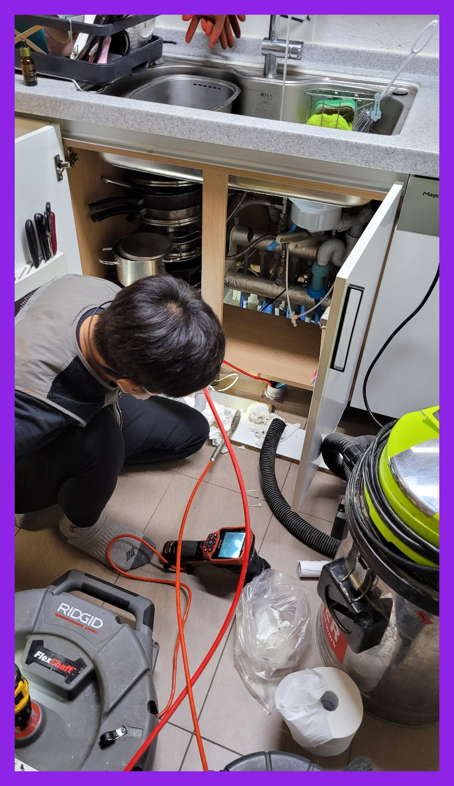
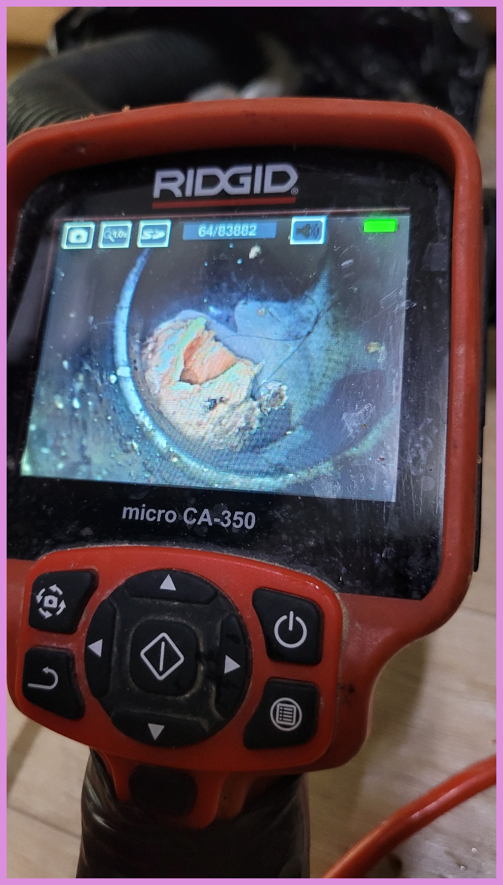
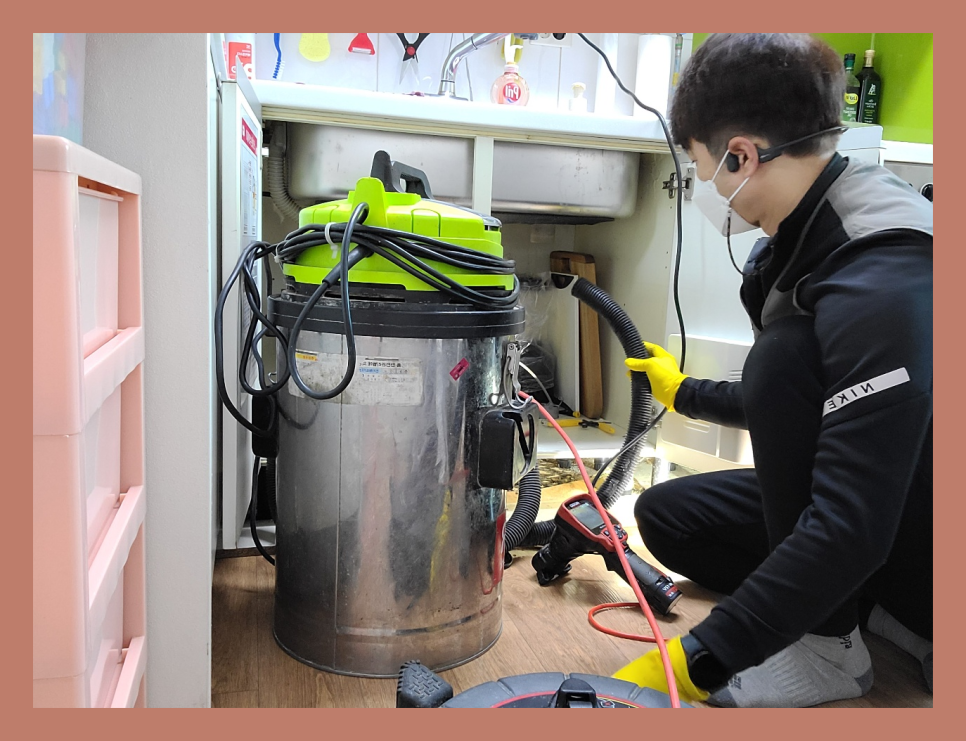
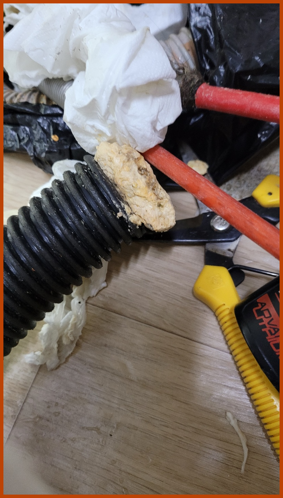
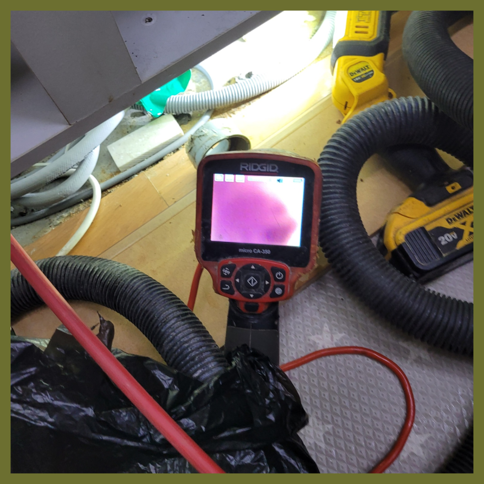
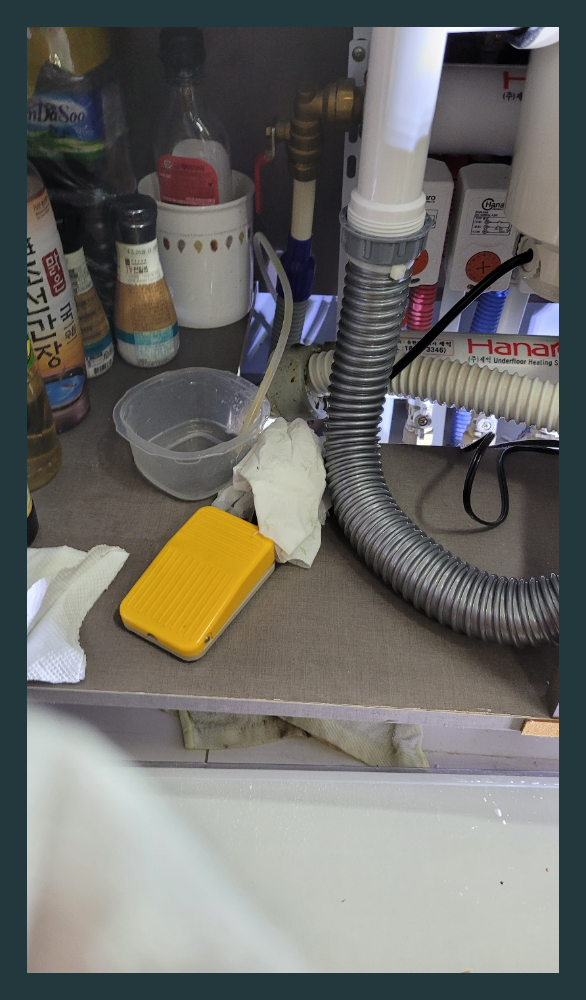

🏠 수원시 장안구 우만동 싱크대막힘역류 하수구전문설비업체
수원 우만동 싱크대막힘 전문 시공 후기

📋 작업 개요
- 위치: 수원 우만동, 우만동, 수원
- 서비스 유형: 싱크대막힘, 변기막힘, 하수구막힘, 배관막힘, 누수수리, 역류해결, 뚫는업체, 배관청소, 고압세척
- 작업 일시: 2023. 9. 26. 23:34
- 업체명: 하수구수사대 (010-5615-2118)
🔍 문제 상황
안녕하세요.
설비전문업체 "하수구수사대"를 찾아주셔서 감사합니다.
안녕하세요. 대개 우리들이 생활속에서 당연하게 사용하고 있는 여러 종류의 배수구시설들이 연결되어 있는 배관에 막힘증상이 나타 난다면 많은 불편함이 생길겁니다.
저희는 배관막힌 곳이 있으면 어디든지 빠르고 신속하게 방문하여 확실하게 뚫어드리는 하수구 업체로 많은 문의를 받고 해결해 드리고 있습니다. 흔히 하수구가 막히게 되는 것은 일상에서 흔하게 일어나지 않기에 갑작스럽게 퇴수구막히게 되면 많이 당황스러울실 수밖에 없을것입니다.
수원시 장안구 우만동 싱크대막힘역류 하수구전문설비업체

🔎 원인 분석
💡 전문가 진단: 수원시 장안구 우만동 싱크대막힘역류 하수구전문설비업체
이물질이 어느 정도 보이긴 했지만 심각한 수준은 아니었는데요. 하지만 구조적인 문제가 확인이 되었습니다. 이번 현장의 세대에 있는 싱크대의 하수는 공동으로 사용을 하는 배관에 합류가 되어 있었는데요.
뚫음 현장뿐만 아니라 부속품 교체를 하거나 누수현장도 실생활에 필요한 모든 부분들을 도와드리고 있어요. 혼자서 어려울 경우 저희 배수구뚤어드림을 통해 도움을 받아보세요. 어려운 현장이라고 하여도 항상 완벽하게 작업해 드려요.
배출수막힘은 얼마나 비용이 들어갈지 모르기 때문에 고민되는 것은 당연합니다만, 시간이 흐를수록 들어가는 비용도 늘어나기 때문에 증상이 발견됐을 때 당장 고칠 생각이 없더라도 얼마나 심각한 것인지 견적 정도는 받아보시고 고려해 보시는 것이 좋습니다.
대충 하수뚫어주고 싸게 돈을 받는 업체를 통해 뚫는다면, 얼마 안 되어 다시 막혀도 또 비용을 지불하고 시간도 내고 이러한 일이 반복되다 보면 그제야 한 번 할 때 확실하게 해결하는 곳을 찾으시는 분도 계시더라고요.
하수막힘 배관청소작업은 고압세척 그리고 이러한 작업은 플렉스 샤프트로 진행을 하는데요. 하수세척에 사용하는 장비의 장점은 직접 하수관에 들어갈 수 있고 직접 슬러지를 분쇄해 준다는 점이 장점이라고 할 수 있습니다. 이 장비 덕분에 내부 덩어리를 깔끔히 제거할 수 있습니다.

🔧 작업 과정
이러한 것들로 인하여 물이 내려가는 속도가 더뎌지고 결국 막혀버리는 상황까지 이르게 됩니다. 더 이상은 배출구막힘 걱정없이 안심하고 싱크대를 이용하실 수 있습니다.
처음에 석션기를 이용해서 위에 고여있는 물을 빼주는 작업을 하였는데요 어느 정도 제거를 하고 나니까 내부를 확인해 볼 수 있는 상태가 되었습니다.배출수막힘 역류 해결 이번 현장의 경우에는 식당 내부 배관으로 흘러들어 가게 되는 이물질들이 문제가 되는 상황이었습니다.
이같은상황들은 경험해보지않으면 공감자체가 안되실텐데요. 퇴수통수자체가 되지않는다면 참을수없을정도로 영향을끼치게되죠.이같은사유로인해 매번 전화를주실때면 촉박하시다는것을 확인하게된답니다.
배수구전문업체를고르시는게 어째서 꼼꼼해야되냐면 제대로뚫기위해서인데요.의뢰하신업체가 잘못하는곳이면 대충보기만하고 가버리고 잠시동안 물이흐르게하고 나몰라라하기도해요.
경험이많은전문업체를 선택하시기위해서는 위의글에서 얘기해드린 최첨단기계들중에서 배출수배관카메라를 갖춰져있는하수구회사를 앞서서 알아보는게좋은방법입니다
견적비용이 비싸지않을까 불안해지시고 수리하지못할까봐 믿지못하시곤합니다.맡기시려고할때 배수구 전문설비회사에 의뢰하시고싶으시다면 저희회사를 소개하려고합니다.
어느곳에 의뢰해야 괴로운일을 벗어나게될까요? 블로그에 많이있는 많고많은 퇴수 배관회사들중 어디로골라야 하는지 어려우실겁니다.경력자분들마다 수리방법도 다르고 견적비용이 다틀려서 처음으로 뚫으신다면 어찌해야할지 모를수있습니다.
아라동 연희동 고객님들은 그전에 다른 곳에서 배관 막힘을 해결한 적이 있는데 장비를 한두 개만 가지고 뚝딱 작업하고 갔다며 하소연을 하시더라고요. 저희와 같은 신기한 장비도 없이 바로 뚫고 가셨다면 당연히 이물질 제거가 꼼꼼히 안 되었을 겁니다.


✅ 작업 완료
저희를 말씀드리자면 미리 정해놓지 않고 심하지 않다면 적더라도 그에 맞는 금액으로 오차가 없도록 안내해 드리고 있으며 음식을 파는 곳에서 문의를 하신다면 빠르게 내방하여 진단을 통해 정확한 견적을 내고 합의하에 작업을 진행하고 있습니다.
서울 전 지역으로 빠르게 출동해 드리며 고객님이 원하는 시간에 맞춰서 방문합니다. 신속하게 문제를 해결해 드리며 완벽하게 처리할 수 있도록 만족을 드리겠습니다
#하수구막힘 #하수구뚫음 #하수구역류 #씽크대막힘 #싱크대역류 #오수관막힘 #하수구청소 #욕실하수구막힘 #변기막힘 #하수구뚫는비용 #싱크대수리 #화장실막힘




⚠️ 베란다 누수 및 방수 관리 방법
- ✅ 비가 많이 올 때 창틀 주변이나 아래층 천장에 얼룩이 생기는지 정기적으로 확인해 보세요.
- ✅ 우수관 주변 실리콘 마감이 들뜨거나 깨진 틈새가 있는지 손상 여부를 수시로 체크하세요.
- ✅ 베란다 바닥 타일의 줄눈(메지)이 소실되면 그 틈으로 물이 침투하여 누수가 유발됩니다.
- ✅ 누수 의심 증상 발견 시 방치하면 아래층 손실이 커지므로 즉시 전문가의 진단을 받으십시오.
💡 핵심 정리
- 확실한 장비 작업(내시경 점검 및 샤프트 스케일링)으로 원인을 뿌리 뽑습니다.
- 작업 후 1년 이내에 동일한 부위 재발 시 100% 무상 A/S 서비스를 보장합니다.
- 서울 · 경기 · 인천 전 지역에 24시간 언제든 긴급 출동할 수 있도록 항시 대기 중입니다.
❓ 자주 묻는 질문 (FAQ)
🚨 수원 우만동 싱크대막힘 문제로 고민이신가요?
정확한 원인 진단과 확실한 시공으로 재발 없는 해결을 약속드립니다.
24시간 긴급 출동 | 서울 · 경기 · 인천 전지역 | 1년 내 재발 시 무상 A/S